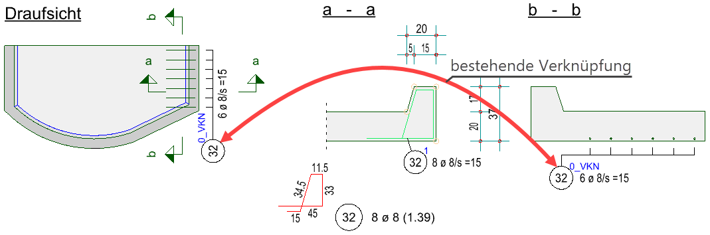
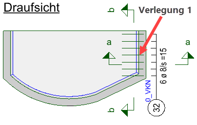
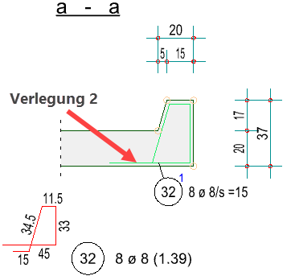
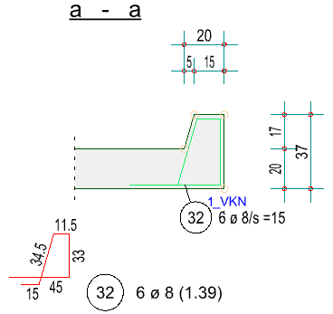
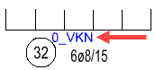

Sie können Verlegungen, die dieselbe Bewehrung in unterschiedlichen Formen darstellen, miteinander verknüpfen, so dass eine Änderung an einer Darstellung automatisch auf die andere übertragen wird. Das verringert nicht nur die Bearbeitungszeit, sondern erhöht auch die Sicherheit.
Der Verknüpfungsmodus ist in den folgenden Verlegearten möglich:
·Verlegung mit Staffeldarstellung [VeStaf]
·Verlegung mit Formdarstellung [VeForm]
·Verlegung einer Biegeform mit gleichen Durchmessern im Schnitt [VeDuSn]
Funktionen zum Verknüpfen von Verlegungen
ISBCAD bietet Ihnen zwei Möglichkeiten, um Verlegungen miteinander zu verknüpfen:
·Verknüpfungsmodus [VKN ein] bei Wahl der Biegeform [Welche Form] für eine Verlegung.
Mit dieser Funktion können Sie bereits bei der Erzeugung einer Verlegung diese mit einer vorhandenen Verlegung verknüpfen.
·Verknüpfungsmodus [VKN] im jeweiligen Menü der Verlegeart.
Mit dieser Funktion können Sie Verlegungen nachträglich verknüpfen, Verknüpfungen aufheben und abfragen, ob eine bestimmte Verlegung verknüpft ist.
Beispiel:
Verknüpfungen können bei der Verlegung oder nachträglich hergestellt werden. Im nachfolgenden Beispiel ist der Schnitt a - a noch nicht mit der Draufsicht verknüpft. Der Schnitt b - b aber schon.
 |
||
Verlegefaktor der Staffel = 0 |
Die Anzahl 8 Ø 8 weicht von der Draufsicht ab! 6 Ø 8. |
Die Anzahl stimmt mit der Draufsicht überein. |
Die Draufsicht wird mit dem Schnitt a - a verknüpft:
 |
 |
 |
|
Vor der Verknüpfung. |
Nach der Verknüpfung. |
Anzeige des Verknüpfungsstatus
 |
An der Positionierung kann der Verlegefaktor mit der Information, ob eine Verlegung verknüpft ist, angeschrieben werden. Ist eine Verlegung verknüpft, wird hinter dem Verlegefaktor der Hinweis "_VKN" hinzugefügt. Diese Information ist nur auf dem Plan sichtbar und wird nicht gedruckt. Aktivieren Sie die Angabe unter [Formst/Formma | BiPos], indem Sie im rechten Menü die Option [FaktAn] einschalten.
Auslagern, Kopieren und Zwischenspeichern von Verknüpfungen
Wenn die Hauptverlegung (Verlegefaktor ≥ 1) zusammen mit mindestens einer oder allen verknüpften Verlegungen (Verlegefaktor = 0) selektiert wird, bleiben diese Verknüpfungen bei weiterer Bearbeitung erhalten. Wird nur die Hauptverlegung oder mindestens eine der verknüpften Verlegungen ausgewählt, wird die Verknüpfung beim Auslagern, Kopieren oder Speichern in die ISBCAD-Zwischenablage aufgelöst. Die Verlegefaktoren bleiben unverändert.
Mit [Konst 1 | Kopier] kann eine Kopie von Verlegungen erstellt werden, die miteinander verknüpft sind. Diese Kopie hat keinen Bezug zu den kopierten Verlegungen und kann frei bearbeitet werden.
Verknüpfungsfunktion [VKN ein] bei der Wahl der Biegeform

1.Verlegung wählen §Klicken Sie den Verknüpfungsmodus [VKN ein] unter der Abfrage an. [Welche Form]. Die Abfrage wechselt zu [Welche Verlegung]. §Klicken Sie eine Staffel- oder Formlinie oder einen Durchmesser der Verlegung, die in einer anderen Darstellungsart gezeichnet werden soll. [Welche Verlegung]. Sie können auch eine Harfen- bzw. Fächerlinie oder den Text der Positionierung anklicken. §Setzen Sie die Form an einer geeigneten Stelle ab. [Form setzen]. (Wird bei [VeStaf] und [VeForm] abgefragt). Die Angabe des Abstandes bzw. der Anzahl und des Durchmessers wird übersprungen. §Wählen Sie unter Teillänge(n), welche Teillängen dargestellt werden sollen: (Wird bei [VeStaf] und [VeForm] abgefragt). Abhängig von der gewählten Biegeform. Gegebenenfalls wird die Abfrage übersprungen.
2.Projektionswinkel und Duplizierrichtung angeben (Wird bei [VeStaf] und [VeForm] abgefragt) §Geben Sie den Drehwinkel (Winkel zur Horizontalen) an oder bestätigen Sie den Vorschlagswert mit Rechtsklick. [DrehWi]. Drehung der Biegeform erfolgt entgegen dem Uhrzeigersinn. (Mit negativem Wert wird im Uhrzeigersinn gedreht.) Wenn Sie die Ausrichtungsoptionen PP oder OP verwenden, können Sie die Form weiterdrehen. [Drehen]. §Geben Sie den Spiegelwinkel an oder bestätigen Sie den Vorschlagswert mit oder Rechtsklick. [SpiegelWi]. §Geben Sie den Winkel für die Projektion der wahren Teillänge(n), bezogen auf die Horizontale, an. [Projekt.Wi]. 3.Verlegebereich definieren §Bestimmen Sie den Verlegebereich, wie in [VeStaf], [VeForm] und [VeDuSn] beschrieben. Stimmen die Bereichslängen der ursprünglichen und der neuen Verlegung nicht überein, wird der Dialog Verknüpfung beachten geöffnet. Im Dialog können Sie auswählen, welche Verteilerlänge bzw. -breite zutreffen soll. Wählen Sie dazu die Option mit der richtigen Länge und bestätigen Sie mit OK.
Wenn Sie Abbruch anklicken, gelangen Sie wieder zur Angabe des Verlegebereiches. Sie können die erforderlichen Korrekturen vornehmen, sodass die neue und alte Verlegung übereinstimmen. Bevor Sie die gesperrte Eingabe des Faktors (*) bestätigen, können Sie, je nach gewählter Verlegemethode noch Änderungen vornehmen (nur bei [VeStaf] und [VeDuSn]). An der ursprünglichen Verlegung werden die Änderungen sofort übernommen. Der Auszugstext enthält die einfache Anzahl der verlegten Stäbe. §Schließen Sie die Eingaben mit Rechtsklick ab. Die Verknüpfung ist erstellt. |


Verknüpfungsfunktion [VKN] im jeweiligen Menü [VeStaf, VeForm, VeDuSn]
§Wählen Sie unter der Abfrage Welche die Option §Klicken Sie die erste von zwei Verlegungen mit identischer Positionsnummer an, die miteinander verknüpft werden sollen. [Welche]. Die Verlegegruppe wird inkl. der Positionierung farbig markiert. Wenn Sie beim Anklicken kein Element der Verlegung getroffen haben, werden Sie darüber informiert. Klicken Sie in diesem Fall die rechte Maustaste, um zum Anfang zurückzukehren. §Klicken Sie die zweite Verlegegruppe an. [(mit) welcher?]. Beide Gruppen werden farbig markiert. Bestehen schon mit anderen Verlegungen Verknüpfungen, werden auch diese markiert. Stellt das Programm fest, dass in beiden Verlegungen unterschiedliche Angaben vorliegen, haben Sie die Möglichkeit in dem folgenden Dialog die Parameter anzupassen.
§Bestätigen Sie die Verknüpfung mit Rechtsklick. [Ergebnis]. Falls keine Parameter angepasst werden müssen, wird die Verknüpfung sofort erstellt und das Ergebnis ausgegeben: "Die markierten Gruppen sind jetzt verknüpft". Die Anzahl am Formauszug enthält nur einmal den Verlegefaktor. |
 .
.")

§Wählen Sie unter der Abfrage Welche die Option §Klicken Sie eine verknüpfte Verlegegruppe an. [Gruppe]. Alle mit dieser Verlegung verknüpften Gruppen werden markiert. §Bestätigen Sie das Ergebnis „Die Verknüpfung der markierten Gruppe wurde aufgehoben.“ mit Rechtsklick. [Ergebnis]. Beispiel: Verknüpfung auflösen
|
||||||||||||
 .
.

§Wählen Sie unter der Abfrage Welche die Option §Klicken Sie eine Verlegegruppe an, von der Sie wissen möchten, mit welchen anderen Verlegungen Verknüpfungen bestehen. [Gruppe]. Alle mit dieser Verlegung verknüpften Bewehrungen werden markiert. §Bestätigen Sie das Ergebnis „Die markierten n Gruppen sind verknüpft.“ mit Rechtsklick. [Ergebnis]. |
.png) .
.